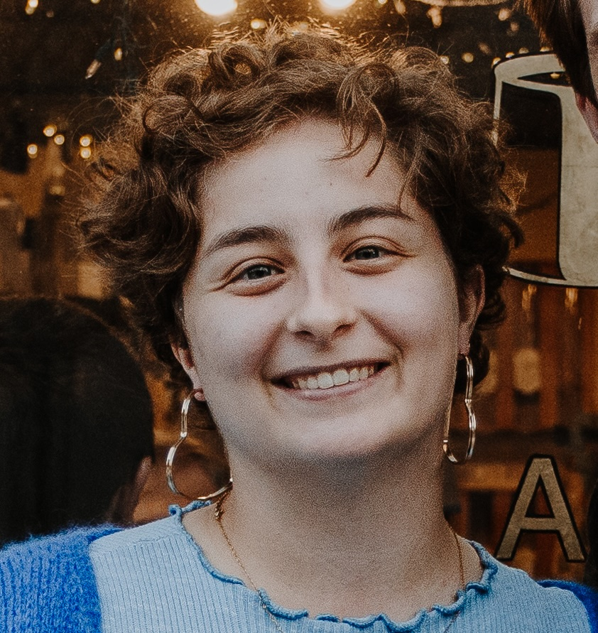

PhD Candidate
Northeastern Univeristy | Cybersecurity & Privacy Lab
About Me
I am a PhD Candidate in Cybersecurity at Northeastern University, advised by Dr. Alan Mislove and Dr. Piotr Sapieżyński. My research spans several critical areas in the intersection of technology and society, with a focus on understanding the societal implications of algorithms and privacy concerns that arise with the continued integration of technology into society. I'm particularly interested in developing methods to analyze and audit algorithms and everyday technologies, ensuring they are fair, transparent, and accountable. My end goal in pursuing research is exploring strategies for creating and maintaining policies and frameworks that balance innovation with ethical considerations and societal well-being.
Contact
Email: zagson.n@northeastern.edu
Links: Google Scholar | GitHub | LinkedIn
News
Our work on connected car privacy was published in The Verge and with our partners Consumer Reports! Checkout the website we made to showcase the project!!
Our paper When For You Isn't “For You”: Measuring User Agency in TikTok's Algorithmic Feed has been presented at AAAI ICWSM '26!
I presented a poster about our research on connected vehicle data privacy and sharing at ESCAR 2026!
Our paper Quantifying the Threat of Sandwiching MEV on Jito: A Measurement of Solana's Leading Validator Client has been accepted at ACM IMC '25!
Journalists from the university interviewed me and covered our work on a recent project
Our paper Track You: A Deep Dive into Safety Alerts for Apple AirTags has been accepted at PETS 2023!